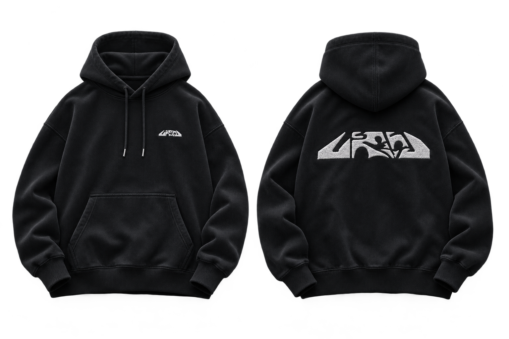
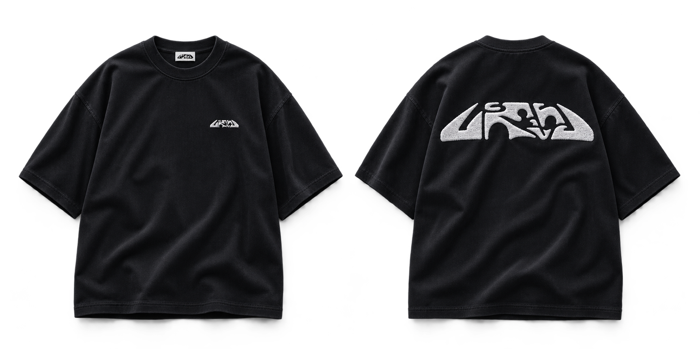
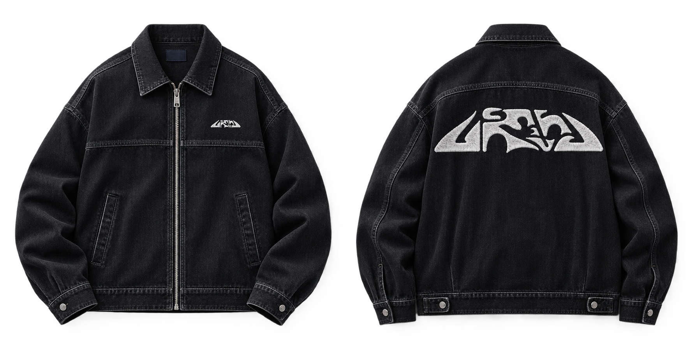
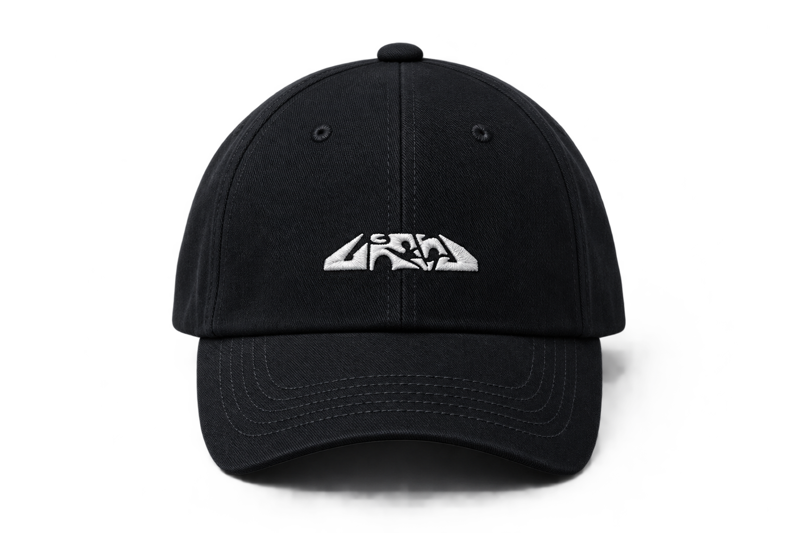

TERRAIN


Различаются вышивка и подача. В макете один вид, в PNG два. Прозрачная область разделяет две проекции.
В каждой карточке сначала показан фрагмент десктопного макета, затем текущий PNG целиком на тёмном фоне. В мобильном макете повторяются те же модели и рисунки вышивки. Все четыре локальных PNG остаются концептами для согласования.

Различаются вышивка и подача. В макете один вид, в PNG два. Прозрачная область разделяет две проекции.

Различаются цвет, рисунок и ракурс. Широкое полотно содержит два вида вместо одного.

Различаются модель, цвет и вышивка. Двухвидовой PNG требует отдельного решения по композиции.

Различаются ракурс, цвет и рисунок. В PNG изделие отцентрировано с заметными прозрачными полями по бокам.